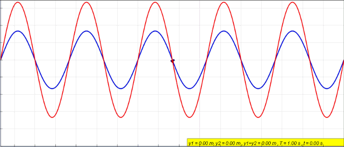
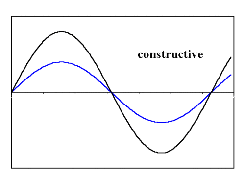
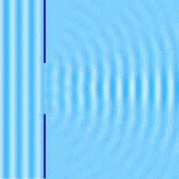
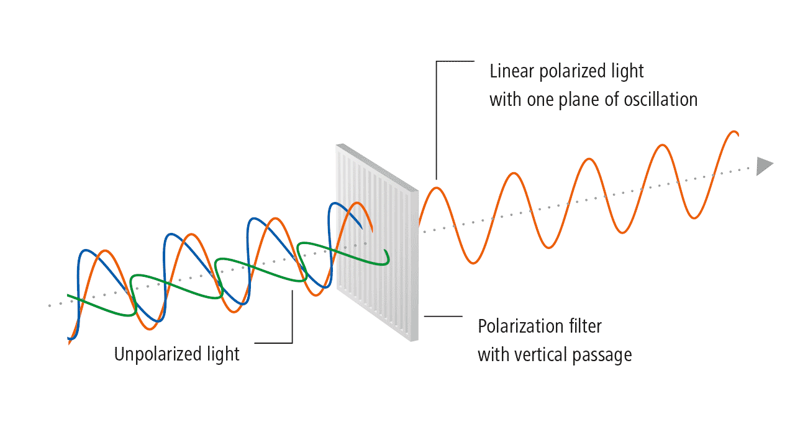

Aula 3 - Fenômenos Ondulatórios
Ondulatória
Objetivos
Ao final desta aula, você deverá ser capaz de:
- Reconhecer reflexão, refração, interferência, difração e polarização.
- Diferenciar reflexão regular e difusa.
- Explicar por que a frequência se mantém na refração.
- Relacionar dispersão com separação das cores da luz.
- Distinguir interferência construtiva e destrutiva.
- Explicar por que sons contornam obstáculos com facilidade.
- Identificar polarização como fenômeno de ondas transversais.
Introdução
Ondas não apenas se propagam. Elas interagem com obstáculos, superfícies, fendas e outros meios. Essas interações explicam eco, lentes, arco-íris, cancelamento de ruído, comunicação por rádio, instrumentos musicais e muitos fenômenos do cotidiano.
Nesta aula, estudaremos os principais fenômenos ondulatórios: reflexão, refração, interferência, difração e polarização. A dispersão será tratada dentro da refração, pois envolve mudança de velocidade em um meio. Batimentos e ressonância serão discutidos junto da interferência, por sua ligação com superposição, reforço e cancelamento de ondas.
O ponto central é perceber o que muda e o que não muda em cada situação. Na reflexão, a onda retorna ao meio de origem. Na refração, muda de meio e sua velocidade se altera. Na interferência, ondas se superpõem. Na difração, a onda contorna obstáculos ou se espalha ao atravessar aberturas. Na polarização, apenas certas direções de vibração são selecionadas.
Esses fenômenos aparecem tanto em ondas mecânicas quanto em ondas eletromagnéticas, com algumas restrições importantes: por exemplo, a polarização é característica de ondas transversais. Ao longo da aula, vamos usar exemplos com som, luz, cordas e água para construir uma interpretação comum para situações aparentemente diferentes.
Reflexão
A reflexão ocorre quando uma onda encontra uma superfície ou obstáculo e retorna ao meio de origem.

Na reflexão, se a onda continua no mesmo meio, sua velocidade, frequência e comprimento de onda permanecem os mesmos. O que pode mudar é a direção de propagação e, dependendo da situação, a fase da onda.
Leis da Reflexão
Para reflexão regular:
- o raio incidente, o raio refletido e a normal pertencem ao mesmo plano;
- o ângulo de incidência é igual ao ângulo de reflexão.
Essas leis valem para ondas luminosas, sonoras e também para ondas em superfícies de água, desde que seja possível identificar a direção de propagação da onda. Em um espelho plano, por exemplo, a luz reflete de maneira organizada e forma imagem nítida. Em uma parede áspera, a luz também reflete, mas em muitas direções, produzindo reflexão difusa. Por isso conseguimos enxergar uma folha de papel de vários ângulos, mas não vemos nela uma imagem como em um espelho.
No caso do som, a reflexão explica o eco e a reverberação. O eco ocorre quando o som refletido chega ao ouvido com atraso perceptível em relação ao som original. A reverberação ocorre quando muitas reflexões chegam em tempos muito próximos, alongando o som, como em igrejas, ginásios e salas vazias.
Reflexão em Cordas

Em uma extremidade fixa, o pulso refletido retorna invertido. Em uma extremidade livre, retorna sem inversão. Esse comportamento ajuda a entender ondas estacionárias em cordas.
Exemplos de reflexão:
- eco;
- espelhos;
- ondas em cordas;
- ondas na água batendo em barreiras;
- reflexão interna em fibras ópticas.
Aplicações tecnológicas:
- sonar, usado para medir profundidade e localizar objetos submersos por reflexão de ondas sonoras;
- ultrassonografia, que forma imagens a partir de ecos de ondas ultrassônicas nos tecidos do corpo;
- radar, que detecta posição e velocidade de objetos pela reflexão de ondas eletromagnéticas;
- tratamento acústico, que usa materiais absorventes e difusores para controlar reflexões sonoras em estúdios e auditórios.
Refração
A refração ocorre quando uma onda muda de meio e sua velocidade muda.

Na refração:
- a frequência permanece a mesma, pois é determinada pela fonte;
- a velocidade muda;
- o comprimento de onda muda, pois \(v=\lambda f\).
Se a onda entra em um meio onde sua velocidade diminui, seu comprimento de onda diminui. Se entra em um meio onde sua velocidade aumenta, seu comprimento de onda aumenta.
Na luz, a refração geralmente vem acompanhada de mudança de direção quando a incidência é oblíqua. É por isso que um lápis parcialmente mergulhado em água parece “quebrado”: os raios luminosos vindos da parte submersa mudam de direção ao passar da água para o ar. O mesmo princípio explica o funcionamento de lentes de óculos, lupas, câmeras, microscópios e telescópios.
No som, a refração também acontece. Em dias com camadas de ar em temperaturas diferentes, a velocidade do som varia com a temperatura, e a onda sonora pode se curvar. Isso ajuda a entender por que sons distantes podem parecer mais fortes em algumas condições atmosféricas.
Aplicações e situações práticas:
- óculos e lentes de contato, que desviam a luz para corrigir miopia, hipermetropia e astigmatismo;
- fibra óptica, em que a luz é guiada por diferenças de índice de refração e reflexão interna;
- miragens, causadas pela refração da luz em camadas de ar com temperaturas diferentes;
- ondas sísmicas, que mudam de velocidade e direção ao atravessar camadas internas da Terra.
Dispersão
A dispersão ocorre quando ondas de frequências diferentes se propagam com velocidades diferentes em um meio. Na luz branca, isso pode separar as cores.

O arco-íris envolve refração, reflexão interna e dispersão da luz solar em gotas de água.
A luz branca é uma mistura de muitas frequências visíveis. Ao atravessar um prisma ou uma gota de água, cada cor sofre um desvio ligeiramente diferente. Como resultado, as cores se separam em uma sequência que vai do vermelho ao violeta.
Esse efeito não acontece apenas em prismas. Em um CD ou DVD, as trilhas microscópicas também separam cores, embora o mecanismo principal envolva difração e interferência. Em fibras ópticas, a dispersão pode ser um problema: pulsos de luz com frequências diferentes podem chegar em instantes ligeiramente diferentes, dificultando a transmissão de dados em longas distâncias.
Aplicações tecnológicas:
- espectroscopia, usada para identificar substâncias pela luz que emitem ou absorvem;
- astronomia, em que a análise do espectro da luz permite estudar composição, temperatura e movimento de estrelas;
- telecomunicações ópticas, que precisam controlar a dispersão para transmitir informação com alta velocidade;
- sensores ópticos, que usam mudanças no espectro da luz para medir propriedades de materiais.
Interferência
A interferência ocorre quando duas ou mais ondas se superpõem.

- Interferência construtiva
- As ondas chegam em fase. Crista com crista ou vale com vale. A amplitude resultante aumenta.
- Interferência destrutiva
- As ondas chegam em oposição de fase. Crista com vale. A amplitude resultante diminui ou pode se anular.


O princípio importante é a superposição: quando duas ondas ocupam a mesma região, o deslocamento resultante é a soma dos deslocamentos produzidos por cada onda. Depois do encontro, cada onda continua se propagando. Portanto, na interferência destrutiva, a anulação pode ocorrer em uma região e em um instante, mas as ondas não “somem” definitivamente.
No cotidiano, a interferência aparece quando dois alto-falantes emitem sons parecidos. Em alguns pontos da sala, o som fica mais intenso; em outros, fica mais fraco. Isso depende da diferença entre os caminhos percorridos pelas ondas até o ouvinte.
Aplicações:
- cancelamento ativo de ruído;
- padrões de luz em filmes finos;
- afinação de instrumentos por batimentos;
- interferência em ondas de rádio.
Aplicações tecnológicas adicionais:
- fones com cancelamento de ruído, que emitem uma onda sonora em oposição de fase ao ruído externo;
- revestimentos antirreflexo em lentes, que reduzem reflexos por interferência destrutiva;
- interferômetros, usados em medidas extremamente precisas de distância, vibração e deformação;
- redes Wi-Fi e telefonia celular, que precisam lidar com reforços e cancelamentos causados por múltiplos caminhos de propagação.

Batimentos
Batimentos surgem da interferência entre ondas de frequências próximas. O som parece aumentar e diminuir periodicamente.
\[ \boxed{f_b=|f_1-f_2|} \]
Batimentos são úteis na afinação de instrumentos. Se duas notas deveriam ter a mesma frequência, mas produzem batimentos lentos, isso indica que estão próximas, mas ainda não iguais. Ao ajustar a tensão de uma corda, os batimentos diminuem até desaparecerem.
Ressonância
Ressonância ocorre quando uma fonte excita um sistema em frequência próxima de uma frequência natural. A amplitude cresce por transferência eficiente de energia.

Exemplos:
- balanço recebendo empurrões no ritmo certo;
- caixa acústica reforçando certas frequências;
- cordas e tubos sonoros em instrumentos musicais.
A ressonância pode ser desejada ou indesejada. Em instrumentos musicais, ela amplifica determinadas frequências e dá identidade ao timbre. Em engenharia, vibrações ressonantes precisam ser controladas em pontes, prédios, motores e máquinas, pois amplitudes grandes podem causar desconforto, ruído ou danos estruturais.
Aplicações tecnológicas:
- ressonância magnética, que usa respostas ressonantes de núcleos atômicos em campos magnéticos para formar imagens médicas;
- rádio e TV, em que circuitos ressonantes selecionam uma frequência específica entre muitas ondas recebidas;
- instrumentos musicais, como violão, flauta e saxofone, que dependem de ressonâncias em cordas, caixas e colunas de ar;
- controle de vibração, usado no projeto de veículos, edifícios e equipamentos industriais.
Difração
A difração é o espalhamento de uma onda ao passar por uma abertura ou contornar um obstáculo.


A difração é mais intensa quando o tamanho da abertura ou obstáculo é comparável ao comprimento de onda.
Por isso, o som contorna obstáculos com mais facilidade que a luz visível: o som audível tem comprimentos de onda muito maiores que os da luz.
Esse fenômeno explica por que conseguimos ouvir alguém conversando em um corredor mesmo sem enxergar a pessoa. A luz visível tem comprimento de onda muito pequeno em comparação com portas, paredes e móveis, então sua difração nesses obstáculos é pouco perceptível. Já o som audível tem comprimentos de onda da ordem de centímetros a metros, o que torna o espalhamento muito mais evidente.
A difração também impõe limites tecnológicos. Em microscópios ópticos, detalhes muito menores que o comprimento de onda da luz são difíceis de resolver. Em antenas, o tamanho do equipamento está relacionado ao comprimento de onda utilizado: antenas de rádio costumam ser maiores que antenas usadas para sinais de frequências mais altas.
Aplicações e consequências:
- projeto de caixas de som, em que a difração afeta como o som se espalha pelo ambiente;
- radiodifusão, pois ondas de rádio podem contornar morros, prédios e outras estruturas;
- raios X em cristais, usados para investigar a estrutura atômica de materiais;
- limite de resolução de câmeras e microscópios, relacionado ao comprimento de onda da radiação usada.
Polarização
A polarização ocorre quando se seleciona uma direção de vibração de uma onda transversal.

Ondas eletromagnéticas podem ser polarizadas. Ondas sonoras no ar não são polarizadas, pois são longitudinais.
Uma onda transversal vibra perpendicularmente à direção de propagação. No caso da luz comum, as vibrações do campo elétrico podem ocorrer em muitas direções. Um filtro polarizador deixa passar preferencialmente uma dessas direções e bloqueia parte das demais.
Reflexos em superfícies como água, vidro e asfalto podem ficar parcialmente polarizados. Por isso óculos de sol polarizados reduzem o brilho refletido, especialmente em praias, estradas e superfícies molhadas. Em telas LCD, a polarização é essencial: a tela controla a passagem da luz usando filtros polarizadores e cristais líquidos.
Aplicações:
- óculos de sol polarizados;
- filtros fotográficos;
- telas LCD;
- antenas de telecomunicação.
Outros usos:
- fotografia, para reduzir reflexos em vitrines, água e pintura automotiva;
- cinema 3D, em alguns sistemas que enviam imagens com polarizações diferentes para cada olho;
- ensaios de materiais, em que tensões internas podem ser observadas com luz polarizada;
- comunicações por satélite, nas quais a orientação da antena e da polarização do sinal afeta a recepção.
Quadro Comparativo
- Reflexão
- A onda retorna ao meio de origem. Exemplos: eco, espelho e sonar.
- Refração
- A onda muda de meio e de velocidade. Exemplos: lente, lápis na água e miragem.
- Dispersão
- Frequências diferentes se separam. Exemplos: arco-íris, prisma e espectro da luz.
- Interferência
- Ondas se somam na mesma região. Exemplos: fone antirruído, batimentos e manchas coloridas.
- Difração
- A onda se espalha ao passar por abertura ou obstáculo. Exemplos: som passando por portas e rádio contornando obstáculos.
- Polarização
- Uma direção de vibração transversal é selecionada. Exemplos: óculos polarizados, telas LCD e fotografia.
- Ressonância
- Um sistema oscila intensamente em sua frequência natural. Exemplos: balanço, instrumentos musicais e circuitos de rádio.
Exemplos Resolvidos
Exemplo 3.1 - Identificação de Fenômeno
Uma pessoa grita diante de uma parede distante e escuta o som retornando.
Resolução: o som bate na parede e volta ao meio de origem.
Resposta: reflexão sonora, percebida como eco.
Exemplo 3.2 - Refração e Comprimento de Onda
Uma onda de frequência \(10\,\text{Hz}\) passa de um meio em que sua velocidade é \(50\,\text{m/s}\) para outro em que sua velocidade é \(30\,\text{m/s}\). Determine os comprimentos de onda.
No primeiro meio:
\[ \lambda_1=\frac{v_1}{f}=\frac{50}{10}=5\,\text{m} \]
No segundo meio:
\[ \lambda_2=\frac{v_2}{f}=\frac{30}{10}=3\,\text{m} \]
Resposta: a frequência permanece \(10\,\text{Hz}\), e o comprimento de onda diminui de \(5\,\text{m}\) para \(3\,\text{m}\).
Exemplo 3.3 - Batimentos
Duas fontes emitem sons de \(440\,\text{Hz}\) e \(444\,\text{Hz}\). Determine a frequência dos batimentos.
\[ f_b=|444-440|=4\,\text{Hz} \]
Resposta: ocorrem \(4\) batimentos por segundo.
Exemplo 3.4 - Difração
Por que é possível ouvir uma pessoa falando atrás de uma porta parcialmente aberta?
Resolução: a abertura tem dimensões comparáveis aos comprimentos de onda de parte do som audível. O som se espalha ao passar pela abertura.
Resposta: devido à difração sonora.
Erros Comuns
- Dizer que a frequência muda quando a onda refrata.
- Confundir reflexão com refração.
- Achar que difração só acontece com luz.
- Dizer que som no ar pode ser polarizado.
- Confundir interferência destrutiva com desaparecimento definitivo das ondas.
Exercícios de Fixação
- 3.1)
- Um eco retorna \(0{,}50\,\text{s}\) após a emissão de um som. Considerando \(v=340\,\text{m/s}\), a distância até a parede refletora é:
- \(85\,\text{m}\).
- \(170\,\text{m}\).
- \(340\,\text{m}\).
- \(680\,\text{m}\).
- \(0{,}0015\,\text{m}\).
- 3.2)
- Em uma corda presa a uma extremidade fixa, um pulso chega à extremidade e retorna. O pulso refletido:
- retorna sem inversão.
- retorna invertido.
- transforma-se obrigatoriamente em som.
- muda sua frequência para zero.
- deixa de ser uma onda.
- 3.3)
- Quando a luz branca atravessa um prisma e se separa em várias cores, o fenômeno principal observado é:
- polarização.
- batimento.
- dispersão.
- eco.
- ressonância.
- 3.4)
- Duas fontes emitem sons de \(250\,\text{Hz}\) e \(256\,\text{Hz}\). A frequência dos batimentos é:
- \(506\,\text{Hz}\).
- \(250\,\text{Hz}\).
- \(6\,\text{Hz}\).
- \(256\,\text{Hz}\).
- \(12\,\text{Hz}\).
- 3.5)
- Uma onda de \(20\,\text{Hz}\) refrata para um meio em que \(v=60\,\text{m/s}\). Seu comprimento de onda nesse meio é:
- \(1\,\text{m}\).
- \(2\,\text{m}\).
- \(2{,}5\,\text{m}\).
- \(4\,\text{m}\).
- \(3\,\text{m}\).
- 3.6)
- É possível ouvir uma pessoa falando atrás de uma porta parcialmente aberta principalmente porque o som:
- sofre polarização no ar.
- não transporta energia.
- sofre difração ao passar pela abertura.
- transforma-se em luz ao atravessar a porta.
- precisa sempre se propagar em linha reta.
- 3.7)
- Na refração de uma onda produzida pela mesma fonte, a grandeza que permanece constante é:
- velocidade.
- frequência.
- comprimento de onda.
- direção obrigatoriamente.
- amplitude obrigatoriamente.
- 3.8)
- Em uma corda, duas ondas de mesma amplitude \(3\,\text{cm}\) chegam em fase a um ponto. A amplitude resultante nesse ponto é:
- \(0\,\text{cm}\).
- \(3\,\text{cm}\).
- \(6\,\text{cm}\).
- \(1{,}5\,\text{cm}\).
- \(9\,\text{cm}\).
- 3.9)
- Óculos de sol polarizados reduzem reflexos porque:
- aumentam a velocidade da luz.
- transformam luz em som.
- eliminam todo comprimento de onda.
- selecionam uma direção de vibração da luz.
- mudam a massa dos fótons.
- 3.10)
- Um balanço passa a oscilar com grande amplitude quando recebe empurrões periódicos no ritmo adequado. Esse é um exemplo de:
- dispersão.
- refração.
- polarização.
- ressonância.
- difração.
Recomendações
Referências
- HEWITT, Paul G. Física Conceitual. Porto Alegre: Bookman.
- HALLIDAY, David; RESNICK, Robert; WALKER, Jearl. Fundamentos de Física. Rio de Janeiro: LTC.
- YOUNG, Hugh D.; FREEDMAN, Roger A. Física II: Termodinâmica e Ondas. São Paulo: Pearson.
- Wikimedia Commons. Diffraction. Disponível em: https://commons.wikimedia.org/wiki/Category:Diffraction.
- Wikimedia Commons. Interference. Disponível em: https://commons.wikimedia.org/wiki/Category:Interference.
- Wikimedia Commons. Polarization. Disponível em: https://commons.wikimedia.org/wiki/Category:Polarization.
- Wikimedia Commons. Light dispersion conceptual.gif. Disponível em: https://commons.wikimedia.org/wiki/File:Light_dispersion_conceptual.gif. Acesso em: 30 jul. 2026.
- Wikimedia Commons. WaveInterference.gif. Disponível em: https://commons.wikimedia.org/wiki/File:WaveInterference.gif. Acesso em: 30 jul. 2026.
- Wikimedia Commons. Thin film interference - soap bubble.gif. Disponível em: https://commons.wikimedia.org/wiki/File:Thin_film_interference_-_soap_bubble.gif. Acesso em: 30 jul. 2026.
- Wikimedia Commons. Two-frequency beats of a non-dispersive transverse wave (animated).gif. Disponível em: https://commons.wikimedia.org/wiki/File:Two-frequency_beats_of_a_non-dispersive_transverse_wave_(animated).gif. Acesso em: 30 jul. 2026.
- Wikimedia Commons. Driven-pendulums-resonance-animation.gif. Disponível em: https://commons.wikimedia.org/wiki/File:Driven-pendulums-resonance-animation.gif. Acesso em: 30 jul. 2026.
- FÍSICA TOTAL. Fenômenos ondulatórios. Disponível em: https://youtu.be/YDCDzP1wB7g. Acesso em: 21 jul. 2026.
- IBAHIA. Aula de física sobre fenômenos ondulatórios. Disponível em: https://www.youtube.com/watch?v=oXFUMD8U3x8. Acesso em: 21 jul. 2026.
- PROENEM. Fenômenos ondulatórios no Enem. Disponível em: https://www.youtube.com/watch?v=dJj0zVPtLwM. Acesso em: 21 jul. 2026.
{kind=link}
{kind=link}
{kind=link}
.gif){kind=link}
{kind=link}